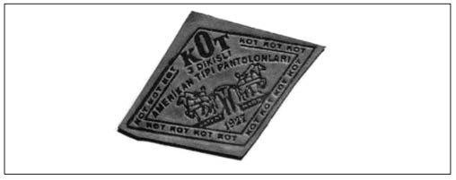

K-L
Kara Çete (İttihat ve Terakki Gıda Bakanı Kara Kemal’in çetesine verilen ad): Gıda Bakanı Kemal Bey, İttihat ve Terakki’nin en ilginç simalarından biriydi. Milletvekili olmayan tek hükümet üyesi olan Kemal Bey, halk arasında “Zülüflü” veya “Kara Kemal” lakaplarıyla anılıyordu. İttihat ve Terakki’nin Genel Merkezi’nde Talat Pa-şa’ya “Büyük Efendi”, Kemal Bey’e de “Küçük Efendi” deniliyordu. Kara Kemal, parti içinde olağanüstü örgütlenme yeteneğiyle tanınmıştı ve savaş sırasında da fırıncı, bakkal, manav, kasap gibi esnaf ve sanatkar kesimini örgütlemişti. Esnaf örgütünü güçlü bir yapı hâline getirmiş, eski loncaları canlandırmış ve esnaf arasında birlikteliği sağlamıştı. Hamallar Teşkilatı ise bir tür komando kuvvetiydi. Babıâli Baskını’nda Enver Paşa’nın sivil militanlarını Babıâli’nin kapısına yığan da ondan başkası değildi. Sait Halim Paşa ve Talat Paşa kabinelerinin kuruluşu sırasında, en önemli rolleri üstlenmişti. Resmî hiçbir sıfatı olmadığı hâlde kendi çevresinde yarattığı güç sayesinde İttihat ve Terakki’nin İstanbul Örgütü aracılığıyla çok güçlü bir derebeylik düzeni kurmuştu. Kara Kemal yeri geldiğinde, Talat, Enver ve Cemal’den oluşan üçlü yönetime gözdağı vermeyi de ihmal etmiyordu. Kendisinin istediği yapılmadığı takdirde, emrindeki ayak takımına dayanarak her şeyi alt üst edecek güçte olduğunu hissettiriyordu. Kara Kemal, görevinin ilk döneminde İstanbul’un sadece beslenmesini tekeline almış bir kişiyken, daha sonraları İstanbul’un ekonomik yaşantısının tek düzenleyicisi hâline geldi. İddialara göre Kemal Bey, zenginleştirmeye karar verdiği insanları, kendisine olan bağlılıklarına göre değerlendiriyordu. Bu dönemde bulgur krallarından, pirinç, yağ ve şeker krallarına kadar savaş zengini bir zümre oluşturuldu. Yapılanların ardında “Kara Çete” olduğu değerlendirilmesi yapılırken, İttihatçıların tüm yargılanmalarında (1918, 1919, 1926) Kara Kemal’in şirketleri boy hedefi seçildi. Ağır ve somut bir suç saptanamayınca, bazı küçük suiistimaller üzerinde duruldu. Ankara İstiklal Mahkeme-si’nde verdiği ifadesinde, iktisat ve maliye uzmanı olmasına rağmen kendisine hiçbir şekilde danışılmadığından yakınan dönemin Maliye Nazırı Cavit Bey de, Kara Kemal ve arkadaşlarını “Her partiye musallat olan asalaklar” olarak niteledi. Tarık Zafer Tunaya’ya göreyse, Kemal Bey’in girişimleri yarım kalmış bir devletçilikti.
KİT’lerin Zararları (Bir ekonomi efsanesi): Türkiye ekonomisi, 24 Ocak Kararları’yla yapısal bir değişim sürecine girmişti. Devletin küçültülmesi de, özelleştirme politikalarıyla adım adım hayata geçirilecekti. Kararlara göre, kamu yatırımları tasfiye edilecek ve KİT sistemi politikacıların ellerinden kurtarılacaktı. Bu aşamadan sonra Cumhu-riyet’in ilk yıllarında kurulan ve ülkenin yeniden kuruluşuna ilk harcı koyan kamu kuruluşları, ekonomik krizlerin nedeni olarak gösterildi ve suçlu ilan edilmeye başlandı. Halkın birikimleriyle oluşan KİT’ler, her türlü kaynaktan yoksun bırakılıp fiilen zarar ettirilmeye çalışıldı. Bu dönemde bütçe açıklarının sorumlusu olarak gösterilen KİT’ler, borç tuzaklarına sürükleniyordu. KİT’lerin sahibi konumdaki Hazine, kendi kuruluşlarına yatırım ve sermaye artırımı için kaynak aktarmıyor ve bu kurumlar iç ve dış piyasalardan borçlanmaya zorlanıyordu. Oysa daha önce gördüğümüz gibi devlet, iflas ettirilen, batırılan, hortumla-nan onlarca özel sektör işletmesini ve bankasını devralmış ve milyarlarca doları bulan zararlarını üstlenmişti. Devlet bankalarının özel sektöre bol keseden kredi dağıtması da işin cabasıydı. Bu durum, ilk bakışta görev zararlarının oluşmasına neden oluyor gibi gözükse de gerçekte bu kurumların zarar etmediğini kanıtlamaktaydı. Bu kurumlar, uluslararası rekabete hazırlanmamış, yağmalanmış ve partizanlık yapılarak kadroları şişirilmişti. Bütün bunlara rağmen, zarar ettikleri öne sürülen KİT’lerin bütçeye katkıları hiç de az değildi. Örneğin, 1999 Başbakanlık Yüksek Denetleme Kurulu yıllık KİT raporlarında, Türkiye’nin toplam vergi gelirlerinin yüzde 29,50’sinin KİT’ler tarafından sağlandığı belirtiliyordu. 1980’li yıllar, KİT’lerin “zarar” ettiği yönündeki ideolojik bombardımanın da yapıldığı yıllardı. KİT’lerin kurumlar vergisi içindeki payı yüzde 30 civarında olmasına rağmen, sistemli olarak KİT’lerin bütçe üzerindeki yükünden bahsediliyor ve zarar ettikleri ileri sürülüyordu. ANAP iktidarı bu propagandayla özelleştirmeyi dayatmak istiyordu. Nitekim, özelleştirme uygulamaları program olarak benimsenerek hayata geçirildi.
KİT’leri Özelleştirme (Kârlı kuruluşların özelleştirilmesinin mantığı hâlâ çözülemedi): 1930’lu yılların başında devlete ait fabrikalar ileride özel sektöre devredilmek üzere birer birer açıldı. Fakat başta II. Dünya Savaşı gibi olağanüstü bir dönemden geçilmesi nedeniyle, bu konu uzunca bir süre ülke gündemine gelmedi. 19501960 yılları arasında Türkiye’de liberal ekonomi tam manasıyla uygulamaya konmuş, serbest piyasaya dayalı kapitalist bir kalkınma modelinin ilk adımları atılmıştı. 1950’de Demokrat Parti, KİT’leri özelleştirme sloganıyla iktidara gelmişti ancak yaşanan süreç karşısında kamu yatırımlarını artırmak zorunda kaldı. 1951-1960 yılları arasında 13 yeni kamu iktisadi teşebbüsü kuruldu. Aslında hükûmet 1950’lerin başında bu kuruluşları özel sektöre devretmeye çalışmıştı. Fakat özel sektör bu kuruluşları devralmaya hiç niyetli değildi. Hatta bazı özel sektör temsilcileri, kamu kuruluşlarının hisse senetlerinin alımını hü-kûmet bonolarından daha az riskli ve daha kârlı hâle getirecek hiç de gerçekçi olmayan ayrıcalıklı koşullar talep etmişlerdi. Hatta Başbakan Menderes 1954’te şu sözleri söylüyordu:
“Ülkede o kadar çok kârlı yatırım olanağı vardı ki bu koşullarda bile, özel sektörün kamu işletmelerini devralma fikrine ilgi gösterme ihtimali pek yüksek değildi.”
Özelleştirmelerin ülke gündemine girebilmesi için 1980’li yıllara kadar beklenmesi gerekiyordu. Özelleştirme kamuoyuna sürekli değişen gerekçelerle sunuldu. Fakat gerçekte satılanlarsa, en kârlı kurumlar oldu.
Koç-Sabancı Rekabeti (İki büyük sermaye grubunun bitmek bilmeyen mücadelesi): Türkiye’nin iki büyük topluluğu arasında yüksek sesle ifade edilmese de bir çekişmenin varlığı bilinen bir gerçektir. Bu rekabet, sanayi sektöründeki çekişmeden, ticari bankaların hisse senetlerinin toplanmasına ve hatta sanat eserlerinin satın alımına kadar çok çeşitli alanlara yayılmıştı.
Çekişmeye ilişkin ilk somut adım 1970’li yıllarda atıldı. Bu yıllarda Odalar Birliği, ithal kotalarının paylaştırıl-masında önemli bir yetkiyle donatılmıştı. 1971’e kadar devam eden bu uygulamada özel sektöre tahsis edilen döviz, odalar aracılığıyla dağıtılmaktaydı. Bu yetkiler, odalara hâkim olma yarışını da kızıştırıyor, oda yönetimine egemen olan, olmayana göre çeşitli avantajlar sağlıyordu. Mustafa Sönmez’den ödünç aldığımız bilgilere göre, oda yönetiminde bulunan Sakıp Sabancı, Odalar Birliği’ndeki konumunun sağladığı avantajı kullanarak Koç’un yabancı bir ortakla Türkiye’de aynı malın üretimi için izin almasını engellemiş oldu.
Türkiye’nin en büyük iki sermaye grubunun ilişkileri her zaman rekabete dayalı olmadı. Zaman zaman işbirliğine de yönelmişlerdi. Sabancı ve Koç Holding uzun yıllar, Garanti Bankası’nın yönetimini birlikte yürüttü. 1980’li yıllarda, Türkiye’nin en büyük iki grubunun finans sektöründeki ortaklığı o dönemin flaş gündem konularından biriydi. Her şey iyi başlamış ve iyi gideceğe benziyordu. Ta ki Koç Grubu Garanti Bankası’nda sermaye artırımı is-teyinceye kadar. Mevduatı büyütmek, şube sayısını artırmak ve bankayı daha ileri noktaya taşımak için sermaye artırımı şarttı. Ancak ortada ciddi bir sorun vardı. Sabancı Grubu sermaye artırımına karşı çıkıyordu. Koç ailesinin çabaları sonuç vermeyecek ve sermaye artırımı gerçekleşmeyecekti. Sonuçta anlaşamayan iki ortak, bankayı 1983’te Ayhan Şahenk’e sattı.
1993’te Gümrük Birliği tartışmaları Koç ve Sabancı gruplarını bir kez daha karşı karşıya getirdi. Toyotasa Yönetim Kurulu Başkanı Özdemir Sabancı’nın “Biz Gümrük Birliği’ne hazırız” demesiyle başlayan Koç-Sabancı kavgası, Koç Holding İdare Komitesi Başkanı İnan Kıraç’ın, “Öz-demir Bey herhâlde daha sanayici olmadı” suçlamasıyla tırmandı. Kıraç, “Koç grubu olarak Gümrük Birliği’nden korkmuyoruz ama otomotiv yan sanayii henüz hazır değil” dedi. Gümrüklerden Sorumlu Devlet Bakanı Nafiz Kurt da GB’ye giriş konusunda görüş ayrılığına düşen Koç ve Sabancı gruplarının tartışmalarına karışarak şunları söyledi:
“Bu tartışmalar kendi aralarında, bizi hiç ırgalamaz. Türkiye’yi Sabancı ile Koç idare etmiyor. İtalya’da üretilen Fiat otomobili ile Tofaş’ın ürettiği Fiat aynı mı? Onlar da aynı standardı getirsinler. Kuyruklarına basınca ağlayacaklar mı?”
2005’te iki topluluk bir kez daha ortak iş yapmaya karar vermişti. Koç Grubu, Gima’yı almak için Fiba Holding ile görüşmeler sürdürdüğü sırada, Gima ve Endi mağazalar zincirinin yüzde 40 hissesinin Sabancı grubuna ait Carrefoursa’ya satılmasıyla, Türk Telekom ve Milli Piyango özelleştirmelerinde birlikte hareket etme kararı alan iki grubun oluşturduğu ortaklık sona erdi.
Konut İkramiyeleri (Bankacılıkta lotarya uygulamalarından biri): 1944’de kurulan Yapı ve Kredi Ban-kası’nın ilk kez 1945’te uygulamaya başladığı gayrimenkul ikramiye çekilişleri, kumbara sahiplerine ikramiye olarak para dağıtılmasından ibaretti. Yapı Kredi Bankası yeni girdiği bankacılık sektöründe İş Bankası ve Ziraat Bankası ile rekabet edebilmek için çekilişlerde ikramiye olarak konut vermeye başladı. Bankanın başlattığı bu yeniliği kısa sürede diğer bankalar da uygulamaya başladı. Murat Koral-türk’e göre, savaşın ardından 1950’li yıllarda banka mevduatlarındaki artışta ikramiye çekilişlerinin önemli katkısı oldu. İkramiye uygulamasının bankacılık sektörüne olduğu gibi kentleşme sürecine de olumlu yansımaları oldu. O günün şartlarında modern konutlarda oturmak isteyenler bu uygulamayla teşvik gördü. Dolayısıyla bir yandan tasarruflar teşvik edilirken, diğer yandan da yeni şehirli bir sınıfın hiç değilse küçük bir parçasının oluşumuna da bu uygulamalarla katkıda bulunulduğu bir gerçektir.
Kot, Kot Değildir (Türkiye’de blucinin yaratıcısı Muhteşem Kot’un reklam sloganı): İkinci Dünya Savaşı sonrası dönemde Amerikan kültürü, dünyanın her tarafına hızla yayılıyordu. Levi Strauss’un 1800’lerin sonunda Amerika’yı demiryolu döşeyerek kat eden işçiler için tasarladığı blucin, Karaköy’deki Necati Bey Caddesi’nden İstanbul çevresine, Ankara’da da Hergele Meydanı ve Samanpa-zarı’ndan Anadolu’ya yayılıyor, işçi ve köylünün iş elbisesi ihtiyacını karşılıyordu. Blucinler birçok ülkeye kaçak yolla giriyordu. Türk gençlerinin ilgisini gören “Amerikan pazarları” bu fırsatı değerlendirmekte gecikmedi ve kısa sürede bir “ikinci el” blucin sektörü oluştu.
Kamu kuruluşlarına ve orduya personel giysisi sağlayan tüccar-terzi Muhteşem Kot, blucini 1940’da Fransa’da tanımıştı. Taş gibi sağlam, olağanüstü dikişleri olan bu rahat ve bakımı kolay pantolonu Amerika’da çiftçilerin ve sığır çobanlarının giydiğini öğrenen Kot, Türk işçi ve köylüsünün de aynı rahatlıkta bir ürüne ihtiyacı olduğunu düşüncesiyle Türkiye’ye döner dönmez üretim yapmaya karar verdi. Bütün olumsuz şartlara rağmen ilk pantolonu yapmayı başardı. Pantolonların etiketi Levi’s benzeriydi, bir pantolonu iki tarafından ayrı yönlere çeken atlar vardı. Bu simge, dayanıklılığı ifade eden bir göstergeydi.
1958’de soyadını verdiği “Kot” markasını tescil ettirdi, 1960’da da Kot adı markalaştı. Pantolonların çok sağlam olması, üç dikişli makinelerle dikilmesi, temizlenmesinin kolaylığı, ütü istememesi gibi nedenlerle özellikle köylü ve işçilerin ısrarla aradığı pantolon hâline geldi. İlk blucinler renk olarak bugünküleri andırıyordu, ama aynı değildi. Çünkü “denim” denen blucin kumaşı, Hindistan’da aynı adlı bitkiden elde edilen “indigo” boyalı iplikle dokunmadığı için yıkanma ve aşınmayla rengi açılmıyordu. Ancak Muhteşem Bey’in ürettiği kot pantolonlar, blucinler gibi giyildikçe beyazlamak yerine lacivert rengini koruyor, çok yıkandığında ise sararıyordu. Gerçi, Türk işçi ve köylüsü için bu durum önemli bir sorun teşkil etmiyordu, ancak yeni yetişen genç nesil için beyazlamayan bir blucin giy-mektense, hiç giymemek daha iyiydi. Hemen çözüm bulundu. Muhteşem Bey’in oğlu Aytaç Kot, anlatıyor:
“Çamaşır makinesinin içine attık ponzalarla pantolonları; çok küçük açılmalar oldu, o kadar. Bu arada 30 tane marangozların kullandığı zımpara makinelerinden alıp 2 bin pantolonu tek tek ağarttık. Derken kimya mühendisleri ponzanın yanı sıra bazı formüller geliştirdi de biz de Avrupa’dakiler gibi üretime başladık. Bu mamullerle 1979’da Rumeli Caddesi’ndeki dükkân açıldığında büyük izdiham oldu, polis zor baş edebildi. Vitrinde bir çamaşır makinesiyle Silivri’den toplattığım çakıl taşları ve ağarmış blucinler vardı. Olay çıktı, işte gerçekten “stonewash” (taş yıkama) idi. Başta Samanyolu Sokak’taki tekstilciler olmak üzere bunu gören herkes blucinlerini makinelerde taşla yıkamaya başladı, hâlbuki alakası yok.” (Yener Süsoy, Hürriyet, 10 Mart 2003)
Ünlü blucin markalarının 1980’lerden itibaren Türkiye’ye yasal yoldan girmeye başlamasıyla o zamana kadar iyi satış rakamlarına sahip olan Kot marka blucin artık ikinci sınıf oldu. Kot’un üretimine 1992’de son verildi.

Amerikan blucinine Türkiye’de “Kot” denir. Kot, aslında pantolon adı değil, tek başına bir markanın adıydı.
Kriz Yılları (1970’li yıllara genel olarak takılan ad): Petrol krizleri, ekonomide yaşanan gerilemeler ve sosyal çalkantılar, 1970’lerin belirleyicisi oldu. 9 Ağustos 1970’te devalüasyon yapılarak, Türk lirasının dolar karşısındaki değeri 9’dan 15 liraya düşürüldü. 1973-1974 petrol bunalımı, ekonomiyi derinden sarstı. Bunalımın ekonomiyi etkilemesini ertelemek amacıyla, yurtdışından kısa vadeli ticari krediler ve dövize çevrilebilir mevduat (DÇM) sağlanması yoluna gidildi. 1970’li yıllarda sanayileşme stratejisi ithal ikamesine dayanmasına karşın, ekonominin dışa bağımlılığı arttı. Hızlı yatırım temposu, beraberinde ithalat artışını getirdi. Öyle ki, ihracatın ithalatı karşılama oranı, yüzde 60’lardan yüzde 30’lara kadar düştü. Özellikle 1970’lerin ikinci yarısında, enflasyon 3 haneli rakamlara kadar ulaştı. Türkiye’nin 70’li yıllarına ekonomik kriz damgasını vurunca ekonomi durma noktasına gelmişti. Fabrikalar ya düşük kapasiteyle ya da hiç çalışmıyordu. Türkiye, 1979’un sonunda borç erteletmeksizin borç ödeyemez hâle geldi ve uluslararası finans piyasasında kredi güvenirliğini yitirdi. Dönemin Türkiye ekonomisinin fotoğraflarını, benzin, sana yağ ve tüp kuyrukları en iyi şekilde süslüyordu.
Kurtarma Operasyonları (Özel zararları kamuya mal etmenin bir yöntemi): Türkiye’de ilk şirket kurtarmaları 1930’lu yıllarda yaşandı. Süreyya İlmen Paşa, Türkiye’de girişimci sınıf yaratılmasının öncülerinden biriydi. Türk havacılığının gelişimine de öncülük eden Süreyya Paşa, ordudan ayrılarak, devlet yardımı almadan 1914’te, İstanbul Balat’ta kurduğu Süreyya Paşa Mensucat Fabrikası ile de Türkiye’nin ilk sanayicilerden biri oldu. 1927’de sinema ve tiyatro salonu açan Paşa, 1940’lardan itibaren de bugün kendi adıyla anılan Süreyya Paşa Göğüs Hastalıkları Hastanesi, Süreyya Plajı, Süreyya Paşa Sanatoryumu gibi kuruluşların gerek arazilerinin gerekse mülklerinin de sahibiydi. Ne yazık ki örnek girişimci Süreyya Paşa’yı sıkıntılı günler bekliyordu. Paşa’nın Mensucat Fabrikası, 1936’da büyük bir mali sıkıntı yaşıyordu, fabrikanın satılması ya da kapatılması gerekiyordu. 1937’de Celal Ba-yar’ın Başbakanlığı döneminde, devlet tarafından şirket kurtarma operasyonlarından ilki bu fabrika için gerçekleştirildi. Fabrika, 1943’te borçlarından kurtarılarak aileye teslim edildi. Türkiye’de girişimciliğin öncülerinden olmasına rağmen Süreyya Paşa’nın sosyal amaçlı olanlar dışındaki teşebbüsleri ayakta kalamadı. Malvarlığını büyük oranda bağışlaması ve Adalet Mensucat fabrikasında gerekli yatırımlara gidememesi, Cumhuriyet’in ilk girişimcilerinden birinin sonunu getirdi.
Türkiye’de şirket kurtarma operasyonları 1980’li yıllarda da sürdü. Faizlerin 1981’de serbest bırakılmasıyla hızlı reel faiz artışları, “paradan para kazanma” işlerini cazip hâle getirmişti. Piyasadaki daralma sonucu paraya sıkışan iş adamları ve özellikle de müteahhitlerin faiz hadlerine dikkat etmeden borçlanmaları 1982-1983 yılları arasında ciddi bir “para piyasası krizi” yarattı. Yüksek faizin cazibesine aldanan binlerce kent insanı, malını mülkünü satarak faize yatırmıştı. Kriz sonrası Meban ve Kastelli gibi çok sayıda büyük ve küçük banker iflas ederken para yatıranların çoğu paralarını geri alamadı. Bu arada Hisar-bank, Odibank, İstanbul Bankası, İşçi Kredi Bankası, Bağ-bank gibi küçük bankalar da iflas ettiler. Bu bankaların dördü iştirakleriyle birlikte Ziraat Bankası’na, İşçi Kredi Bankası da İş Bankası’na devredildi. Türkiye Sınai Kalkınma Bankası’ysa İş Bankası’nın iştirakiyle kurtarıldı. Bu yıllarda verilen türlü destekler yetmeyince, birçok şirket tamamen ya da KİT’lerin iştirakiyle kurtarıldı. DİSÜTAŞ, TOE ve Asil Çelik gibi üç şirket, üstelik üst üste iki kez kurtarıldı. Bu kurtarılma işlemleri sonunda olanlar tabii ki hiç kimseyi şaşırtmadı. Türkiye Emlak ve Kredi Bankası ve Anadolu Bankası ayakta duramaz hâle geldiler ve birleşmek zorunda kaldılar.
Küçük Amerika (Türkiye’nin kendini görmek istediği bir model): “Küçük Amerika olma” sevdası, popüler ekonomi tarihimizin en önemli sayfalarından biridir. Rüyalar, düşler ve zenginlikler ülkesi ABD’nin bu imajı diğer milletler gibi Türkleri de etkilemiştir. Onun için, zenginliğin ve refahın simgesi ABD gibi olmak, 1950’li yıllarda Türklerin en büyük düşüydü.
Küçük Amerika deyimini Celal Bayar meşhur etmişti ancak ilk kullanan o değildi. Sözün isim babası CHP’nin Başbakan Yardımcısı Nihat Erim’di. Erim, 19 Eylül 1949 tarihinde İzmit’te iyimser bir konuşma yapıyor, ancak tarih vermeden bu sözü ilk kez kullanıyordu:
“Eğer bir dış felakete uğramazsak, ben memleketin yakın geleceği için çok ümitliyim. Yakın bir gelecekte, Türkiye küçük bir Amerika hâline gelecektir”.
Aradan üç yıl geçti ve Türkiye’de köprünün altından akan sular değişti ve demokratlar iktidara geldi. Başbakan Adnan Menderes, “Amerika ne verirse alacak, ne yaparsa kabul edeceğiz,” diyordu. Demokratlar ayrıca her mahalleden zengin yaratmayı düşünüyor ve bu sayede Türkiye’nin de ABD gibi zenginlikler ülkesi olacağını vaat ediyorlardı. 22 Ağustos 1952’de DP iktidarının Sağlık ve Sosyal Yardım Bakanı Ekrem Hayri Üstündağ, Samsun’da verem hastanesinin temel atma töreninde, küçük Amerika olmak için kesin bir tarih verdi:
“Bu gidişle on yıl sonra Türkiye küçük Amerika olacaktır.”
Sağlık bakanının yaptığı konuşmanın üzerinden birkaç sene daha geçti ve bu sefer Cumhurbaşkanı Celal Ba-yar, 20 Ekim 1957 tarihinde Taksim’de küçük Amerika olmak için yeni bir süre koydu.
“Biz memleketimizde Amerikalıların ilerleyişleri seyrini takip ederek çalışmaktayız. Öyle ümit ediyoruz ki, otuz sene sonra bu mübarek memleket 50 milyon nüfusu ile küçük bir Amerika olacaktır.”
Bayar’ın bu sözleri, Türk iç politikasında uzun yıllar öylesine yer etti ki, silahlı banka soygunlarının ve çeşitli suçların artması üzerine, 19 Ağustos 1961 tarihinde Cumhuriyet gazetesinde Ali Ulvi, karikatüründe Erim ve Ba-yar’ın bu sözlerini işleyerek altına; “Türkiye bir gün küçük Amerika olacaktır” diye yazdı. 2000’li yıllara gelindiğinde, Türkiye hâlâ “Küçük Amerika” olamamıştı. Zaten siyasilerden hiçbiri de ille “Küçük Amerika olalım” demiyordu.
Lan Terbiyesizlik Yapma: (Bkz. Erdoğan Üslubu).
Lockheed Rüşvet Skandalı (Sadece Türkiye’de soruşturulamamış bir rüşvet olayı): Aslında bütün her şey, ABD Senatosu Alt Komite üyesi senatör Frank Church’un, Lockheed uçak şirketinin Japonya, İtalya, Hollanda, Türkiye ve Belçika’da 1968’den itibaren sekiz yıl içerisinde 15 milyon dolar rüşvet dağıttığını açıklamasıyla başladı. Şirketin Türkiye’de dağıttığı rüşvet ise 13 milyon liraydı. İddialara göre de, 1970’lerde üçüncü kişilere “hediye” dağıtılması için Nezih Dural adında bir kişiye 876 bin dolar aktarılmıştı. Konunun Türkiye için bir onur sorunu olduğunu belirten 14 CHP milletvekilli, skandalı Meclis’e taşıdı ve bir meclis araştırması yapılmasını istedi. Adalet Bakanlığı da Ankara Cumhuriyet Savcılığı’nı harekete geçirerek, Lockheed’ın Türkiye temsilcisi David Cater’ın defterlerine el koydurdu. Bu arada Genelkurmay Başkanlığı da bir açıklama yaparak rüşvet konusunda soruşturma açıldığını bildirildi. İlerleyen günlerde, Nezih Dural’ın banka hesaplarına el kondu ve hakkında soruşturma başlatıldı.
ABD ile Türkiye arasında, skandalın araştırılmasıyla ilgili olarak bilgi alışverişinde bulunmak üzere anlaşma yapılmıştı. Anlaşmanın ön hazırlıkları sırasında ABD yönetimi, Hollanda hükümetiyle yaptığına benzer tarzda, “Meclis’e bilgi ve belge verilmesini” sağlayan özel bir hüküm konulmasına gerek olup olmadığını sormuş, ancak Başbakan Demirel “buna gerek olmadığını” söylemişti. Yapılan anlaşmaya göre de, ABD’nin göndereceği belgeler sadece adli kovuşturma yapan birimlere verilecek, aksi şekilde hareket edildiği takdirde bilgi ve belge akışı ABD tarafından durdurulacaktı. Anlaşma sonrası ABD sözünde durdu ve rüşvetle ilgili istenen belgeler Türkiye’ye gelmeye başladı. Fakat bilgi ve belgeler, anlaşmanın şartları bilinmesine rağmen, Başbakan Demirel’in onayıyla TBMM’deki komisyona teslim edildi. Bunun üzerine, ABD’den belge akışı durdu. Belge akışının durmasıyla da kaçınılmaz olarak, Meclis denetimi için yapılacak çalışmalar aksamaya başladı. Bu arada, Amerika’dan bilgi ve belge almak üzere Meclis Soruşturma Komisyonu’ndan birkaç kişinin ABD’ye gitmesi için Yılmaz Alpaslan’ın verdiği önerge Meclis tarafından reddedildi.
Bu sırada, 1977’de Meclis Lockheed Komisyonu çalışmalarını bitirdi. Komisyon, Başbakan Demirel ve Millî Savunma Bakanı Ferit Melen’i sorumlu buldu ve haklarında soruşturma açılmasını istedi. Komisyon Başkanı CHP’li Yılmaz Alpaslan, Amerika’dan gelen belgeler arasında yer alan rüşvet listesinin kayıp olduğunu açıkladı. Bu sırada ülkede yapılan seçimler ve hükümet değişikliklerinin ardından Lockheed ile ilgili gelişmeler bir süreliğine gündemden düştü. Lockheed rüşvet skandalında adı geçen ülkelerde skandala karışanlar yargılandı ve çeşitli cezalara çarptırıldı. Türkiye’de ise, rüşvet alanlar çeşitli nedenlerle yargılanamadı. Bir skandalın daha üstü arkasında yüzlerce soru işareti bırakılarak kapatıldı.
Meclis Lockheed Komisyonu’nun Başkanı Yılmaz Alpaslan’a göre rüşvet skandalı soruşturmasının kapanmasında birçok siyasinin etkisi vardı:
“O zaman bu rapor çeşitli yollarla engellenmeye çalışıldı. Bir kere Başbakan Demirel, Genelkurmay’dan belgeleri yollatmadı. Genelkurmay Başkanı Semih Sancar ile Millî Savunma Bakanı Ferit Melen de, aynı havada oldular. Belgeleri verdiğim Faruk Sükan’dan hiçbir ses çıkmadı. Belgeleri geri istedim. Bana yandığını söyledi. Ne yazık ki bir müddet sonra Faruk Bey istifa ederek, Demirel’in partisine tekrar döndü. Kısacası Ecevit’in basiretsizliği, Sü-kan’ın becerisi, Demirel’in transferi ile Lockheed Skandalı da kapandı. Meclis’te görüşülemedi.”